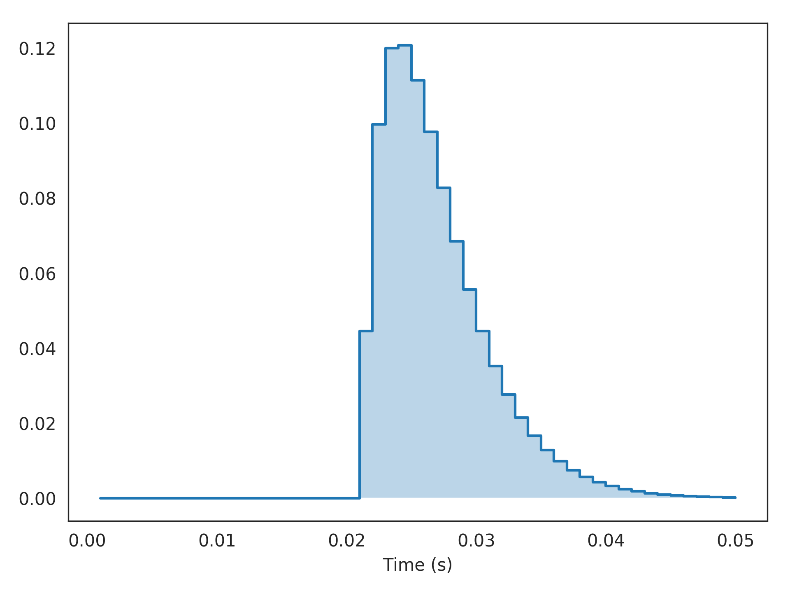

nengolib.signal.cont2discrete¶
-
nengolib.signal.cont2discrete(sys, dt, method='zoh', alpha=None)[source]¶ Convert linear system from continuous to discrete time-domain.
This is a wrapper around
scipy.signal.cont2discrete(), with the same interface (apart from the type of the first parameter).Parameters: - sys :
linear_system_like Linear system representation.
- dt :
float Time-step for discrete simulation of target system.
- method :
string, optional Method of discretization. Defaults to zero-order hold discretization (
'zoh'), which assumes that the input signal is held constant over each discrete time-step. [1]- alpha :
floatorNone, optional Weighting parameter for use with
method='gbt'.
Returns: - discrete_sys :
LinearSystem Discretized linear system (
analog=False).
See also
Notes
Discretization is often performed automatically whenever needed; usually it is unnecessary to deal with this routine directly. One exception is when combining systems across domains (see example).
References
[1] https://en.wikipedia.org/wiki/Discretization Examples
Simulating an alpha synapse with a pure transmission delay:
>>> from nengolib.signal import z, cont2discrete >>> from nengolib import Alpha >>> sys = Alpha(0.003) >>> dsys = z**(-20) * cont2discrete(sys, dt=sys.default_dt) >>> y = dsys.impulse(50)
>>> assert np.allclose(np.sum(y), 1, atol=1e-3) >>> t = dsys.ntrange(len(y))
>>> import matplotlib.pyplot as plt >>> plt.step(t, y, where='post') >>> plt.fill_between(t, np.zeros_like(y), y, step='post', alpha=.3) >>> plt.xlabel("Time (s)") >>> plt.show()
- sys :